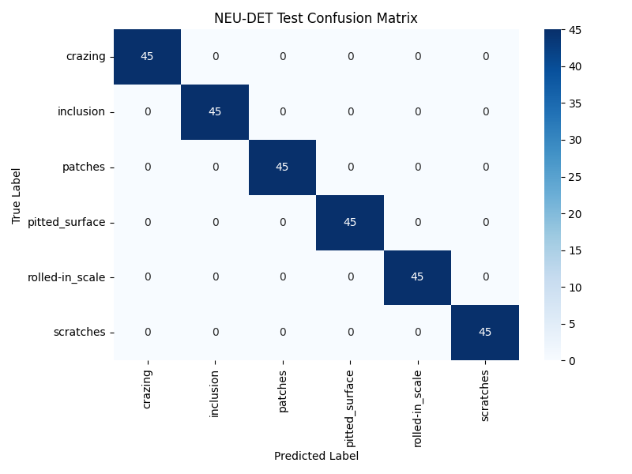
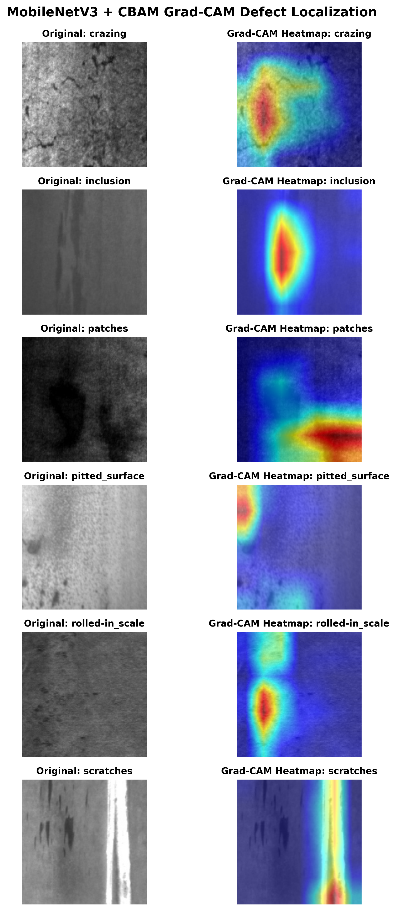

NEU-DET & GC10-DET Real-Time Industrial Pipeline
Architecture: MobileNetV3 + CBAM
Deployment: ONNX Edge Ready
Macro F1 Score across NEU-DET test split
Lightweight design vs heavy models (25M+)
GFLOPs workload per inference frame
~30.6 ms execution time on standard CPU
Evaluated on 270 unseen NEU-DET test samples.

Verifying physical defect localization.

Review these before your presentation for quick, confident responses.
A: ResNet is too heavy (25M+ params) and needs a GPU. MobileNetV3 yields 3.19M parameters and 0.212 GFLOPs, enabling 32+ FPS real-time CPU inference on edge devices.
A: Channel attention determines what defect features matter, while spatial attention identifies where the defect is located, filtering out factory lighting noise.
A: We cleaned duplicates using MD5 hashes, confirmed attention with Grad-CAM heatmaps, and verified cross-dataset generalization using GC10-DET.
A: The model is exported to ONNX format, allowing fast execution on edge hardware via C++, TensorRT, or OpenCV DNN without Python overhead.